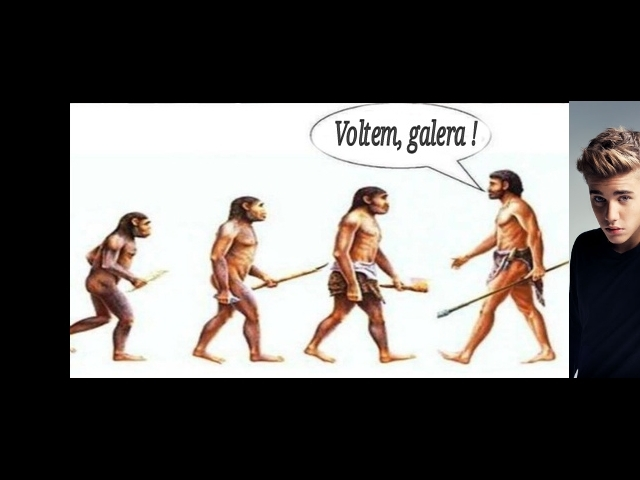
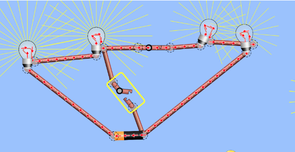
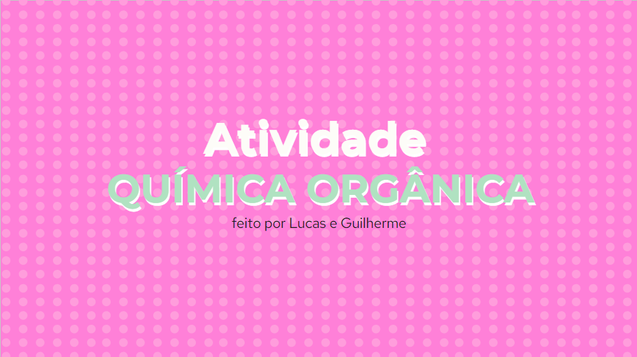
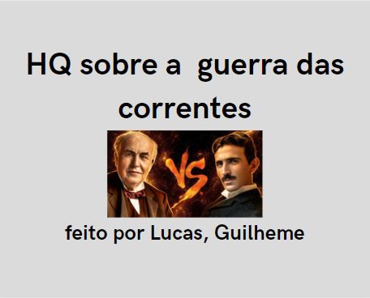

Passo 1 - Criação de um meme sobre evolucionismo. Anexar na forma de imagem.
Passo 2 - Resultados e respostas da "seleção natural" feita por você no simulador. Coloque as respostas em um DOCS.
Habilidades: C2, H11.
Link Atividade
O objetivo desta atividade prática é permitir que os alunos compreendam e experimentem as diferenças entre circuitos de resistores em série e em paralelo, explorando como a resistência total é afetada em cada configuração.
Habilidades: C2, H6, C6, H34.
Link Atividade
Criar uma apresentação dos Tópicos: Carbono, Petróleo, Hidrocarbonetos, Representações, Classificação Carbono, Ligação Sigma e Pi.
Atividade em Duplas
Habilidades: C1, H3, H4, H5.
Link Atividade
Em Duplas nós deviamos criar uma HQ (história em quadrinhos), para ilustrar a pesquisa realizada.
Habilidades: C2, H6.
Link HQ